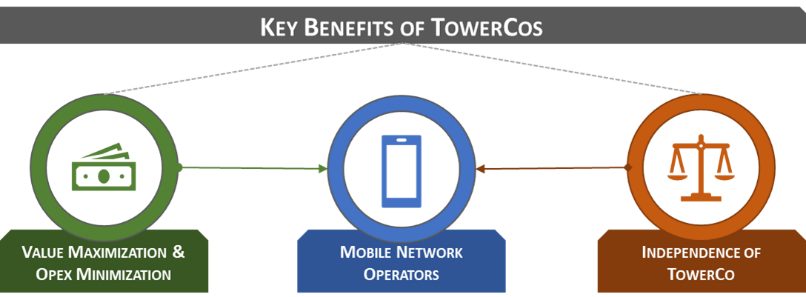
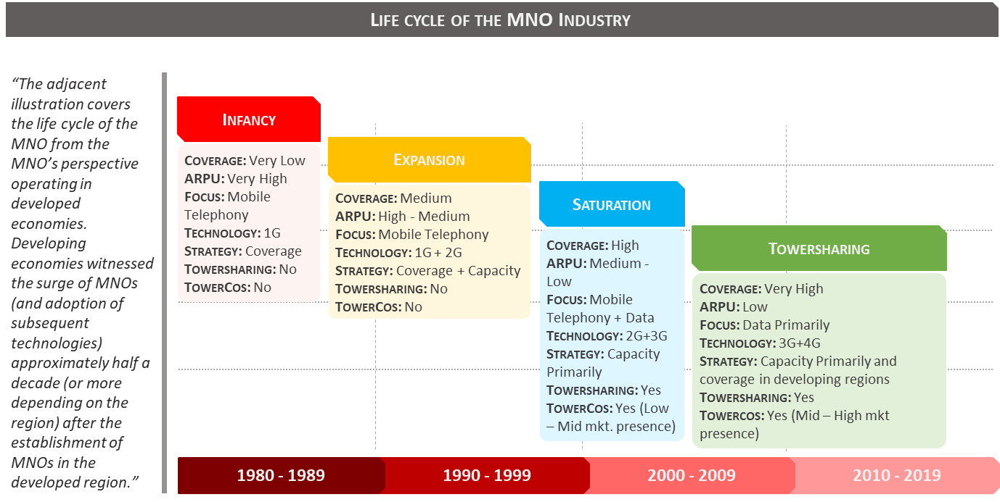

Why Towersharing? 🤔
Disclaimer:
This article is for educational purposes only. Information presented has been compiled from multiple pieces of literature including Towerxchange.com and involves some data crunching conducted by the author. Since most TowerCos are under private ownership globally, data is available to the extent it is provided by Governments and/or TowerCos. Certain approximations have been made.
Please also review the General Disclaimer covering all content in and/or directed from Quantificate.ca.
The Birth of Mobile Telephony 📱
The value of Towersharing as a viable (and much needed) business model can be traced back as early as the 1990s. During the 1980s, commercial mobile telephony and wireless services were in the infancy stage in the United States of America ("US") and better part of the Developed World. MNOs such as Ameritech (1983) launched the first mobile phone in the US and contributed in launching the First Generation ("1G" or more commonly known as Analogue Cellular) in mobile telephony in the US1. Back then, the prime concern of the MNOs was to provide quality cellular services to a wider range of the population. Mobile phones and the cellular services that supplemented these phones were highly priced, resulting in only a select few being able to afford these services. During this era, Pagers (a predecessor to the present-day SMS) were more commonly used as a means of communication. These Pagers utilized a subsection of the same wireless services that were on offer by the early MNOs.
The ARPU Squeeze 📉
As technology progressed in the early 1990s with the introduction of the Second Generation ("2G", "GSM" or Digital Cellular Services) in mobile telephony, the cost of provision of services reduced. However, margins charged to customers for the use of said services by the MNOs were still large resulting in the MNOs enjoying high Average Revenue Per User (or "ARPU").
These high ARPUs were justified by MNOs in light of aggressive expansion undertaken to increase the geographical coverage of the cellular services across the region (i.e. installing new towers across the country/region to expand the network coverage). As more and more MNOs entered the industry (backed by major investment groups), geographical coverage became one of the Unique Selling Propositions (or "USP") of an MNO.
As the geographical expansion of MNOs started nearing maturity and new cellular technology became less expensive, MNOs started competing against each other in terms of pricing (i.e. low-cost packages) and Value-Added Services (or "VAS" such as Data). In order to amass a significant subscriber base and therefore increase market share, prices for cellular services started to become more competitive to encourage the general population to start using these services. This meant that MNOs had to cut down on previously high margins charged to the customers, leading to a general reduction in the overall ARPUs of these MNOs and the respective regions.
Reduced margins did not necessarily mean that the MNOs were less profitable at this point. Since newer technology and cost of operating a tower were also becoming cost efficient, this merely meant that MNOs were not enjoying previously aggressive growth in earnings (all the while still being profitable)2.
Coverage Saturation & The Data Era 🌐
Eventually there was a point in the life cycle of these MNOs where the competitive advantage realized by providing greater Coverage across geographies had saturated (meaning competing MNOs had caught up on the Coverage constraints faced by them previously and had started providing almost like for like Coverage to their consumers). This led to MNOs focusing on realizing competitive advantages based on pricing and VAS.
During this period, the Global Telecommunications Industry was shifting from traditional mobile telephony to provision of Data (internet) services as well. Advancements in Voice over Internet Protocol (or "VoIP") and data backed text and media communication platforms (such as BBM, Skype etc.) led to a less reliance on mobile telephony. It was also during this time that Wireless Internet Service Providers (or Wireless Local Loop "WLL" providers) emerged. These WLL service providers were providing high quality internet services to consumers at prices that were at a significant discount to the rates being charged by the MNOs. As a result, to be competitive, MNOs started focusing more on price competition to stay relevant in the market. This put a further dent into the ARPUs generated by MNOs3.
📊 The Tipping Point: The reduction in ARPUs as a result of aggressive price competition outweighed the reduction in operational costs due to technological innovation and optimization. This encouraged MNOs to search for "out of the box" alternatives to remain competitive.
Why MNO-to-MNO Sharing Didn't Work 🚫
MNOs experimented to implement Towersharing amongst themselves, however this did not gain traction. There were a few reasons for this:
- Strategic Asset Perception: MNOs viewed their towers as "Strategic Assets" — something they had invested a considerable amount of Capital Expenditure (or "CAPEX") into and were not willing to lease to a competitor at a low lease (or rental) rate. Appropriate pricing became one of the major issues.
- Competitive Advantage: Despite the fact that Coverage and Capacity were nearing saturation, the positioning of an MNO tower in a particular area provided a slight service superiority to that specific MNO. If this was a high revenue generating area (i.e. more traffic), MNOs would technically not want to give their competitive advantage up.
- Free-Rider Concerns: Certain smaller MNOs that were eager to Collocate (or lease a space on the main MNO's tower) for Coverage, Capacity or both considerations, were viewed unfavorably. These smaller MNOs were perceived to benefit from the investments already made by the main MNO (by not incurring CAPEX and building a tower) and would eventually become a major threat to the market share in possession of the main MNO.
- Confidentiality: Since MNOs in the market were competing entities, there was a major concern of data and operational confidentiality.
The above concerns eventually paved the path for TowerCos to emerge as a lucrative business model. To be fair, the above concerns do not apply to MNOs operating across all geographies. For example, MNOs/ComCos in Europe have achieved a considerable amount of success in sharing infrastructure and networks among themselves4. This is probably one of the reasons why TowerCo backed Towersharing has not achieved critical mass in the region.
Enter the TowerCo 🏗️
Towersharing's USP rested in the ability of the model to optimize the Traditional ComCo Tower Operating Model. Operating towers was always viewed by ComCos as a supplementary service to enable the ComCos to focus on their primary objective of offering services to its customers (i.e. provision of wireless communication services to the end user). As a consequence of using supplementary assets and services to provide primary services to the end user, there was a general opinion in the TMT sector that these ComCo towers could be operated optimally, if provided the appropriate amount of focus.
TowerCos addressed many of the concerns that discouraged MNOs from sharing towers amongst themselves. A couple of noteworthy benefits on offer to MNOs for considering TowerCo backed Towersharing are as follows:
- Value Maximization & OPEX Minimization5: MNOs can benefit from reducing their Operational Expenditure (or "OPEX") by paying a lower lease fee to TowerCo, and/or can maximize the value of their towers on sale and receive up-front consideration.
- Independence of TowerCo6: Since a TowerCo is not affiliated with any ComCo and operates independently, it satisfies concerns regarding confidentiality of data and operations of ComCos participating in Towersharing.

The MNO Journey: Four Decades at a Glance ⏳
The following illustration summarizes a brief history of the journey of MNOs in developed markets and the respective strategy adopted to gain competitive advantage (and the resulting consequences) during the decades.

💡 Key Takeaway: As coverage matured and ARPUs declined through each decade, the economic pressure on MNOs intensified — ultimately creating the conditions for TowerCos to emerge as a compelling, independent solution.
What's Next? 🚀
Before we dive into the Operational Model of the TowerCos, it is worthwhile to gather a brief understanding of the History of TowerCos and how they have expanded to various regions across the globe. The next section will focus on the History of TowerCos and a sneak peek into the evolution of the TowerCo Model (i.e. how the TowerCo model evolved to address the concerns of MNOs operating in different regions). 🌍
Continue the Series 📚
This is Part 2 of the Towersharing Deep Dive series. Up next: the history of TowerCos and their expansion from the US to a global phenomenon.
← Part 1: Introduction Explore More ArticlesReferences & Sources 📖
- [1] Wikipedia — History of Mobile Phones
- [2] Coverage & Capacity (page 34) — Deloitte: Indian Tower Industry — The Future is Data 2015
- [3] Optimize network OPEX and CAPEX while enhancing the quality of service — EY January 2014
- [4] An introduction to the unique tower industry in Europe — Towerxchange
- [5] Benefits to Operator — Towershare
- [6] Towershare Advantage — Towershare